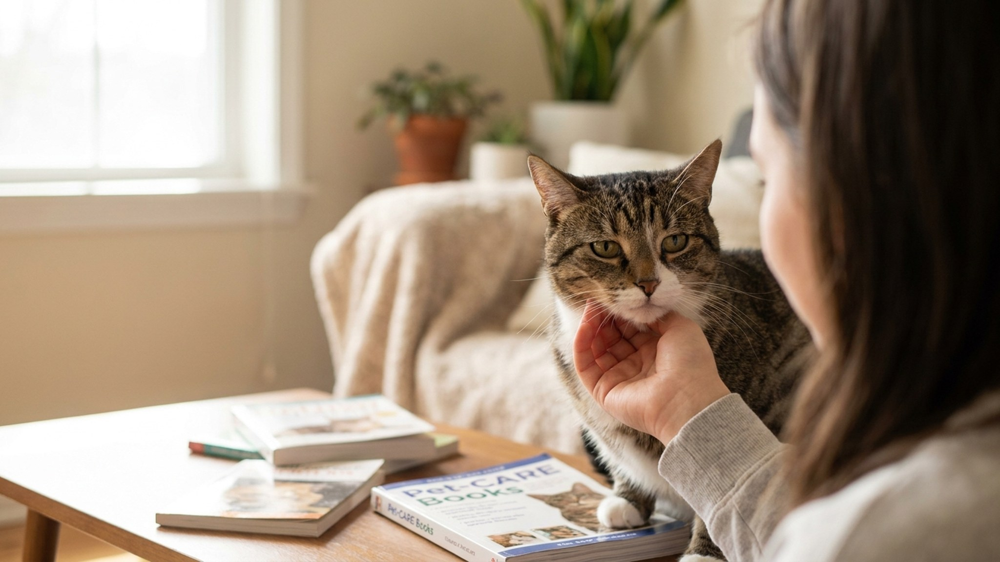

Зубной камень у кошки: чистка дома, гингивит, FORL и когда нужна УЗ-чистка под наркозом

31 мая 2026 · 9 минут чтения · Стоматология кошек
По данным Американской ветеринарной стоматологической коллегии (AVDC), к трём годам у 70% кошек уже есть признаки болезни периодонта. К пяти — у 85%. Зубной камень, гингивит, резорбтивные поражения FORL — это не «возрастное», это управляемые процессы. Чистка щёткой дома снижает скорость образования камня в три раза. Главное — знать, как это делать правильно и когда нужна помощь ветеринара.
Почему у кошек так часто проблемы с зубами
Ротовая полость кошки — агрессивная среда. pH слюны у кошек более щелочной, чем у людей: это создаёт условия для ускоренного образования зубного налёта и его минерализации в камень. Уже через 24 часа после чистки мягкий налёт начинает формироваться заново. Через 3-5 дней — минерализуется в зубной камень, который механически не убрать без профессиональных инструментов.
Дополнительный фактор — питание. Влажный корм и натуральная еда оставляют больше органических остатков между зубами, чем сухой гранулированный корм. Хотя сухой корм тоже не «чистит зубы», как принято считать: большинство кошек раздавливают гранулу, не жуя. Исключение — лечебные линейки Royal Canin Dental или Hill's t/d с особой текстурой и размером гранулы.
Важен и генетический фактор. Персы, экзоты, британские короткошёрстные чаще страдают от скученности зубов из-за брахицефалии — зубы стоят плотно, налёт накапливается быстрее.
Как распознать проблему: признаки гингивита и пародонтита
Ранние признаки болезни дёсен легко пропустить, потому что кошки едят даже с сильной болью. Вот на что смотреть:
- Покраснение дёсен по краю. Норма — бледно-розовые дёсны без воспаления. Красная полоска вдоль зубов — первая стадия гингивита.
- Запах из пасти. Лёгкий запах — норма. Резкий, гнилостный — сигнал бактериального процесса.
- Коричневый или жёлтый налёт у основания зубов. Особенно у клыков и щёчных зубов.
- Кошка трёт мордочку лапой, особенно после еды.
- Снижение аппетита или предпочтение мягкой еды. Кошка начинает есть только с одной стороны.
- Кровь на игрушках или в миске.
- Слюнотечение. Особенно если раньше его не было.
Гингивит (воспаление дёсен) при своевременной домашней чистке и профессиональной чистке обратим. Пародонтит (поражение связочного аппарата зуба и кости) — уже нет.
Что такое FORL и почему это важно знать
FORL (Feline Odontoclastic Resorptive Lesion) — резорбтивные поражения зубов у кошек. По данным 2024 года, они встречаются у 28-67% взрослых кошек, в зависимости от возраста. Механизм до конца не изучен: клетки-остеокласты начинают разрушать ткани собственного зуба изнутри.
Визуально FORL выглядит как розовое или красноватое пятно у основания зуба — это грануляционная ткань, прорастающая через дефект эмали. Зуб постепенно разрушается снаружи и изнутри.
FORL крайне болезнен. Кошка может внезапно бросить еду на полуслове, дёргать головой во время жевания. При осмотре зуб реагирует на прикосновение зондом — кошка сжимает мышцы или дёргается.
Лечение FORL — только экстракция (удаление зуба). Пломбирование неэффективно, потому что разрушение продолжается. Обезболивающие лишь маскируют симптом. Поэтому важно регулярно осматривать пасть и делать рентген зубов на профилактических визитах после 5 лет.
Как чистить зубы кошке дома: пошаговый протокол
Домашняя чистка не заменит профессиональную, но критически снижает скорость образования камня и воспаление дёсен. Начинать лучше с котёнка, но взрослую кошку тоже можно приучить — потребуется терпение и несколько недель.
Этап 1 — приучение (неделя 1-2):
- Дайте кошке облизать зубную пасту с пальца. Паста — только специальная ветеринарная: на основе ферментов (Beaphar, Virbac CET, 8in1). Человеческая паста токсична для кошек — фтор и ксилитол смертельны.
- Не пытайтесь сразу открыть пасть. Просто палец с пастой у морды — пусть сама лижет.
Этап 2 — касание дёсен (неделя 3):
- Намотайте марлю на палец или используйте напальчник. Лёгкими круговыми движениями пройдитесь по внешней поверхности зубов и дёснам.
- 10-15 секунд — достаточно для первых попыток.
- Заканчивайте сеанс лакомством или игрой — ассоциация с приятным обязательна.
Этап 3 — щётка (неделя 4 и далее):
- Детская мягкая зубная щётка или специальная кошачья (маленькая головка, мягкая щетина).
- Угол 45° к поверхности зуба — щётка захватывает и зуб, и линию десны.
- Внешняя поверхность — приоритет. Внутреннюю поверхность кошки сами хорошо очищают языком.
- Чистить не менее 30 секунд активного движения — примерно 30-40 двойных движений щёткой.
- Цель — ежедневно. Минимум — 3 раза в неделю.
Дополнительные средства домашнего ухода
Щётка — лучший инструмент, но не единственный. Вот что реально работает по данным Veterinary Oral Health Council (VOHC) 2025:
- Зубные гели с хлоргексидином (Chlorhexidine Gel, Malacetic Oral Gel). Антибактериальный эффект. Наносить пальцем или щёткой. Не полоскать после — работает в контакте.
- Специальные диетические корма: Royal Canin Dental, Hill's Prescription Diet t/d, Purina Pro Plan Dental. Одобрены VOHC. Снижают образование камня на 40-50% при постоянном кормлении.
- Зубные лакомства с ферментами: Virbac CET Chews, Greenies для кошек. Эффект умеренный, но работают как дополнение к чистке.
- Добавки в воду: TropiClean Fresh Breath, Healthy Mouth. Снижают бактериальную нагрузку. Кошка должна их принять — проверяйте, не отказывается ли от воды.
- Оральные спреи: Vet Aquadent, Logic Oral Hygiene Spray. Удобны для кошек, которые не дают щётку.
Профессиональная чистка: наркоз, ультразвук, что происходит на приёме
Ультразвуковая чистка зубов у кошек проводится только под общей анестезией. Это не прихоть клиники — это медицинская необходимость. Кошка не может лежать неподвижно с открытым ртом 30-60 минут. Любое движение при работающем ультразвуковом скейлере — травма десны или слизистой.
Этапы профессиональной чистки:
- Преанестезия: анализ крови, оценка сердца и лёгких, подбор протокола наркоза.
- Зондирование каждого зуба — оценка глубины зубодесневых карманов.
- Рентген зубов — единственный способ увидеть FORL под десной, резорбцию кости.
- Ультразвуковой скейлинг — удаление над- и поддесневого камня.
- Полировка — закрытие микропор в эмали, замедляющая образование нового налёта.
- Экстракция зубов при необходимости (FORL, пародонтит 3-4 стадии, сломанные зубы).
- Нанесение фторид-лака или антибактериального геля.
Современные протоколы анестезии для здоровых кошек безопасны. Риск не «от наркоза» — риск от того, что зубная инфекция годами идёт в кровоток, поражая почки, сердце, печень.
Как часто нужна профессиональная чистка и когда записывать срочно
Частота зависит от индивидуального риска кошки:
- Домашняя чистка ежедневно, зубной корм + хорошая генетика — профчистка раз в 2-3 года.
- Нерегулярная домашняя чистка, брахицефал, старше 7 лет — раз в год.
- FORL в анамнезе, хронический гингивит, ХБП — по назначению врача, иногда раз в 6 месяцев.
Записывайте срочно, если: кошка перестала есть, трясёт головой во время еды, есть кровотечение из дёсен, опухоль или новообразование в полости рта, сломанный зуб с открытой пульпой, гнойный запах изо рта. Эти симптомы — не «подождать до планового осмотра».
Связь зубного здоровья с общим здоровьем кошки
Рот — не изолированная система. Бактерии, живущие в зубодесневых карманах при пародонтите, постоянно попадают в кровоток. Это явление называется бактериемией, и оно задокументировано у кошек с тяжёлыми заболеваниями периодонта. Мишени для хронической бактериемии — почки, сердце, печень.
Исследование Journal of Feline Medicine and Surgery 2023 показало: у кошек с пародонтитом 3-4 стадии риск хронической болезни почек выше на 25%, чем у кошек с здоровыми зубами при прочих равных условиях. Связь прямая: бактерии фильтруются почками, хроническое воспаление ускоряет их деградацию.
Кариозный зуб или незакрытый FORL — это постоянный источник боли. Кошка ест через боль, часто меняя сторону. Хроническая боль влияет на кортизол, поведение, иммунитет. Кошки, которым удалили больные зубы, в большинстве случаев становятся заметно активнее, игривее и лучше едят — хозяева часто удивляются, насколько питомец «помолодел».
Зубы у кошек разного возраста: что и когда контролировать
Возраст определяет риски и расстановку приоритетов в зубном уходе:
- Котята 2-6 месяцев: смена молочных зубов на постоянные. Задержавшиеся молочные зубы (персистирующие) — частая проблема. Молочный зуб не выпал, постоянный растёт рядом — скученность, риск кармана между зубами. Решается экстракцией молочного зуба. Начинайте приучение к щётке именно в этот период.
- 1-3 года: профилактический осмотр полости рта на каждом плановом визите. Начало домашней чистки. Оценка риска: порода, тип питания, наличие скученности зубов.
- 3-6 лет: первая профессиональная чистка по показаниям. Начало рентгена зубов — это возраст, в котором FORL начинает проявляться.
- 7+ лет: обязательный рентген зубов раз в 1-2 года. Риск FORL, пародонтита, остеолиза кости резко возрастает. Профчистка — ежегодно или по назначению.
Мифы о зубном здоровье кошек
- «Кошки в дикой природе не чистят зубы и живут нормально». Дикая кошка живёт 3-5 лет. Домашняя — 15-18. Сравнивать некорректно. К тому же разгрызание костей даёт механическую нагрузку на зубы, которой нет у домашних кошек.
- «Сухой корм чистит зубы». Стандартный сухой корм — нет. Специальный стоматологический с доказанной формулой — частично. Большинство кошек дробят гранулу, не жуя.
- «Кошка сама покажет, если у неё болят зубы». Нет. Кошки скрывают боль. Кошка продолжает есть даже с тяжёлым пародонтитом. «Ест нормально» не означает «зубы здоровы».
- «Наркоз слишком опасен для чистки зубов». Риск современного протокола анестезии у здоровой кошки — менее 0,1%. Риск от нелеченого пародонтита для сердца и почек — значительно выше.
- «Трав и игрушек достаточно». Жевательные игрушки и кошачья мята не удаляют поддесневой камень и не лечат гингивит. Вспомогательные средства — да, замена чистке — нет.
Что делать прямо сейчас: план действий
- Откройте пасть кошке сегодня и посмотрите: есть ли коричневый налёт, красные дёсны, розовые пятна у основания зубов.
- Купите ветеринарную зубную пасту (Virbac CET или аналог) и начните протокол приучения.
- Если кошке больше 3 лет и ни разу не было профчистки — запишитесь на стоматологический осмотр.
- Обсудите с врачом рентген зубов — особенно если кошке больше 5-6 лет.
- Переведите на часть суточного рациона зубной корм (30-40% от нормы уже даёт эффект).
Зубная боль у кошки — это хроническая боль, которую она скрывает. Профилактика стоит дешевле и безопаснее, чем экстренная стоматология под наркозом. Пять минут чистки три раза в неделю — конкретная инвестиция в здоровье питомца и срок его жизни.
← Все статьи · Открыть AnimaLife в Telegram · RSS